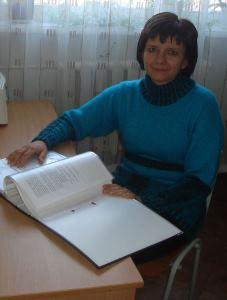
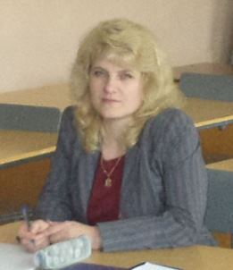
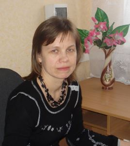
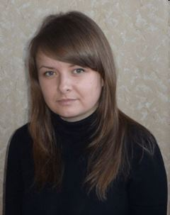
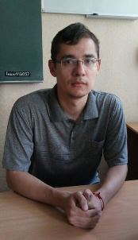
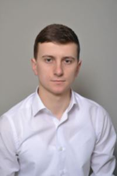

Голова методичної комісії
Рябов Сергій Вікторович
Предмет що викладає: математика, фізика, інформатика.
Стаж роботи: 9 років.
Категорія: перша.
Проблема над якою працює викладач: "Використання міжпредметних зв’язків на уроках фізики".
Члени методичної комісії

Швецова Вікторія Андріївна
Предмет що викладає: математика, астрономія.
Стаж роботи: 26 років.
Категорія: вища, викладач-методист.
Проблема над якою працює викладач: "Використання міжпредметних зв’язків на уроках математики".

Кузуб Людмила Валентинівна
Предмет що викладає: хімія, біологія.
Стаж роботи: 26 років.
Категорія: вища.
Проблема над якою працює викладач: "Використання комп’ютерних технологій як засіб підвищення пізнавальної активності учнів на уроках хімії та біології".

Галицька Інна Михайлівна
Предмет що викладає: німецька мова, українська література.
Стаж роботи: 25 років.
Категорія: вища.
Проблема над якою працює викладач: "Використання проектних технологій навчання на уроках іноземної мови".

Гречковська Тетяна Сергіївна
Предмет що викладає: англійська мова, українська мова.
Стаж роботи: 4 роки.
Категорія: ІІ категорія.
Проблема над якою працює викладач: "Використання Європейського мовного портфоліо для посилення мотивації навчальної діяльності на уроках англійської мови".

Жуков Станіслав Олександрович
Предмет що викладає: історія, правознавство, географія.
Стаж роботи: 0,5 роки.
Категорія: спеціаліст.
Проблема над якою працює викладач: "Реалізація індивідуального підходу до учнів на уроках історії".

Грубий Олег Сергійович
Предмет що викладає: фізична культура.
Стаж роботи: 1 рік.
Категорія: спеціаліст.
Проблема над якою працює викладач: "Впровадження сучасних систем фізичних вправ, для збільшення активності учнів".